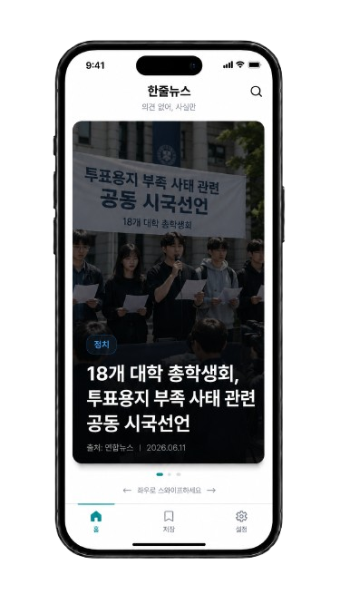

OpenAI, 6월 11일 기업용 AI 기능 업데이트 발표
출처
OpenAI

실제 사례
제목은 '내란 빌미', 본문은 투표용지 시국선언입니다.
현명한 시민은 제목이 아니라 사실부터 봅니다.
"내란 세력에 빌미 줬다"‥18개 총학생회 공동 시국선언
본문을 열면
18개 대학 총학생회, 투표용지 부족 사태 관련 공동 시국선언
제목 ≠ 본문
현명한 시민의 선택
선동에 휘둘리지 않고, 확인된 사실만 고르는 사람들이 선택하는 방식입니다.
자극적 제목에 끌려,
기사를 통째로 읽습니다.
사실만 한 줄로 보고,
편향되기 전에 확인합니다.
예시 맛보기
아래 카드는 서비스 화면을 보여주는 예시입니다. 데모용 뉴스이며, 실제 발행 내용과 다를 수 있습니다.
예시 카드 · 좌우로 넘겨 보세요